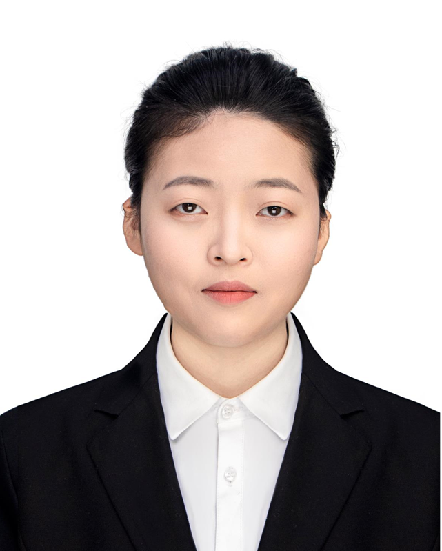
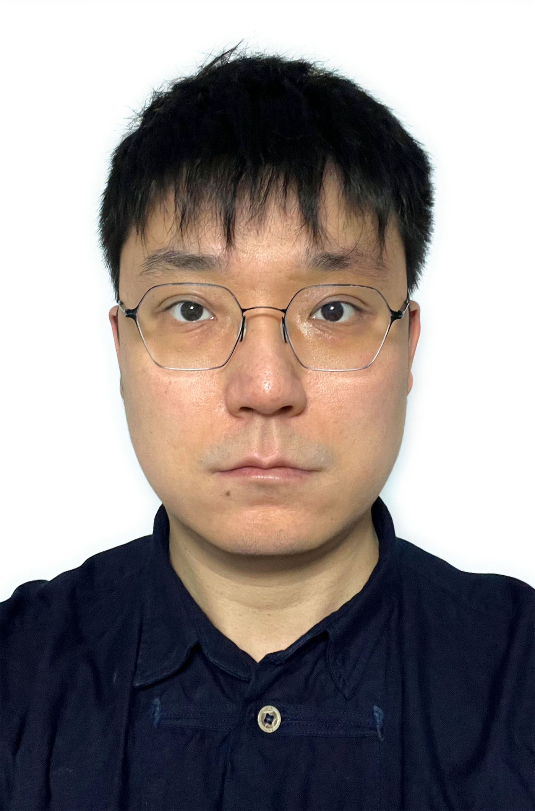
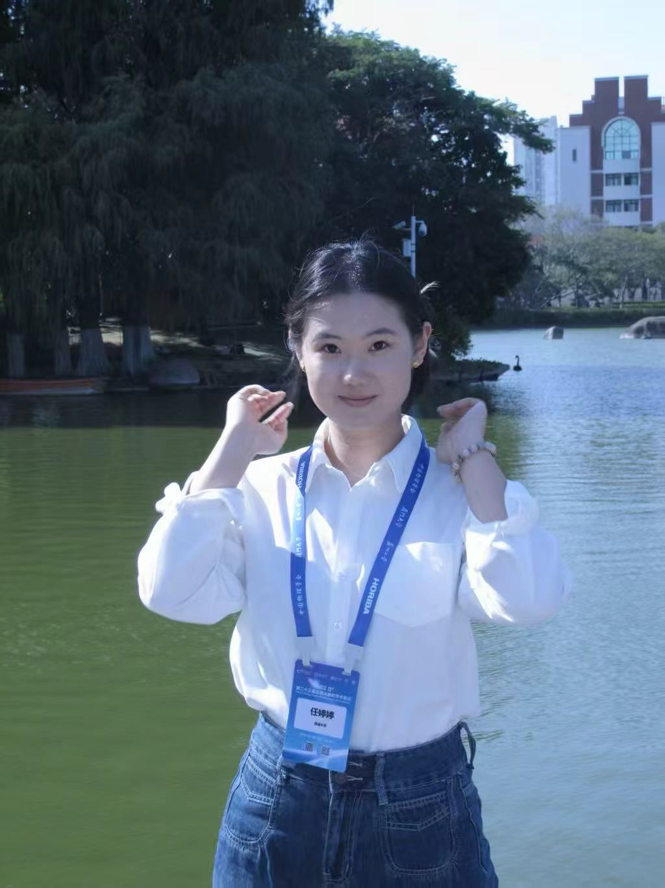
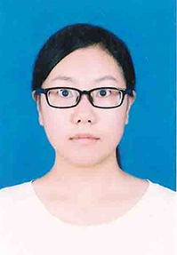
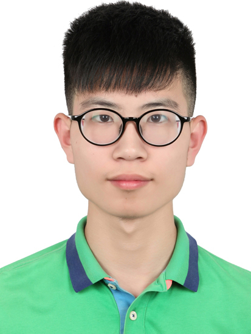
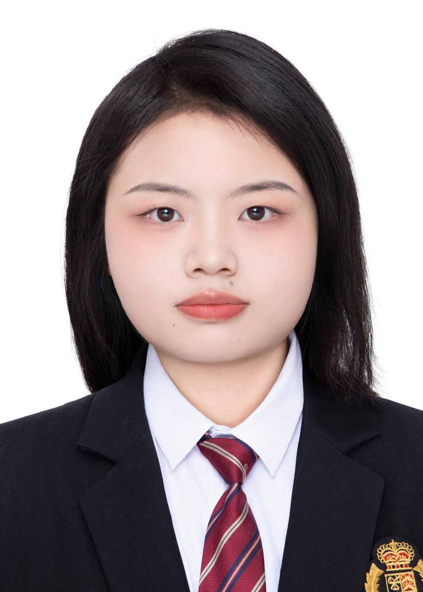
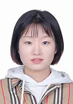
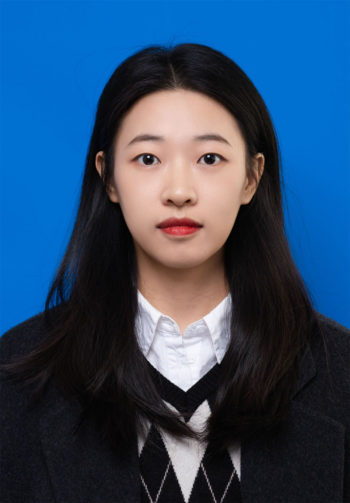
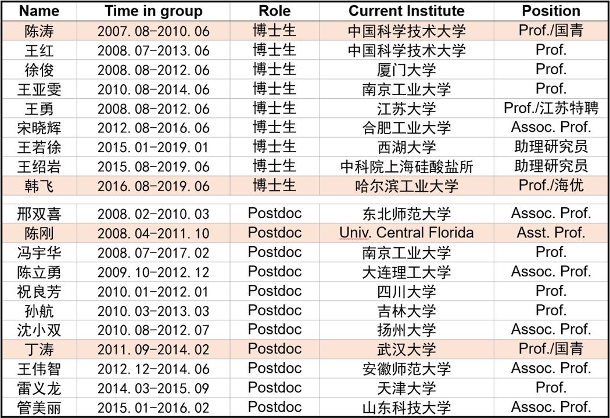

个人简历
2021-至今 西湖大学，理学院，教授（终身教职），博导
研究方向
无机合成、团簇与纳米化学、功能分子/材料的合成、胶体与界面化学、无机功能材料化学、复合与杂化材料化学、表面化学、结构与反应机制、能源材料化学、人工智能应用于材料科学等。主要研究方向为复合纳米合成与机理，及延伸的各种应用。致力于拓展新方法，合成新型纳米结构，研究其形成机理，发展非晶面控制的新型合成手段，使纳米合成从传统领域转向多组分、复合结构、组装结构、新型晶格、低对称性及手性结构等新方向的合成。
学术成果
致力于推进纳米合成的控制力，发展新的合成方法（类似有机反应），发现其背后的机理，并应用这些工具拓展新颖的纳米结构，探索新型应用。其发展的合成方法包括:
现小组成员
     
往届成员
 
2016-2021 南京工业大学，先进化学制造研究院，教授，博导，执行院长
2011-2016 新加坡南洋理工大学Nanyang Technological Univ.，化学与生物化学系，副教授（终身教职），理学部副主任，数理学院副院长
2006-2011 新加坡南洋理工大学Nanyang Technological Univ.，化学与生物化学系，助理教授
2005-2006 康奈尔大学，博士后，指导教师：Carl A. Batt教授
1998-2004 耶鲁大学，博士，指导教师：Gary W. Brudvig教授和Robert H. Crabtree教授
1993-1998 中国科学技术大学，学士，指导教师：钱逸泰教授、唐凯斌教授、朱英杰教授
1）通过固-固界面的构筑，连续调控核-壳、偏心、Janus等纳米结构；
2）纳米线的溶液操作方法，如盘旋成圈，扭转成麻花，编织成绳等；
3）手性纳米结构的构筑；
4）位点选择性的多步纳米合成；
5）新的操控手段，如通过宏观载体的拉伸，超声造成弯折，外磁场诱导变形等。
共发表论文200余篇，其中以通讯作者发表在高影响力杂志（IF>10）的文章有70余篇。主持国家自然科学基金面上项目2项、重大研究计划集成项目和培育项目各1项、新加坡科研项目14项，浙江省自然科学基金重大项目1项、杭州市领军型创新团队项目1项。其培养的博士、博士后中，有20人成为国内外的教授/副教授/助理教授。
目前在学术界学生名单
